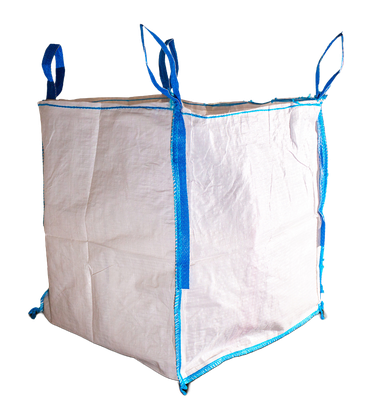
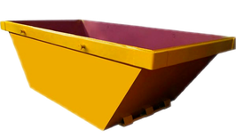

Más vendido

Telesaco Estándar
1 m³ · hasta 1.000 kg
- Reforma de baño completo
- Cocina pequeña
- Cabe en aceras anchas
precio único
50€
+ 5€ envío · gratis desde 3 unidades
Pedir saco estándarAlquiler de saco de escombro (1 m³ / 1.000 kg) y contenedores con entrega 24 h en toda la Comunidad de Madrid. Lo llenas a tu ritmo y te lo recogemos cuando avises. Sin viajes al punto limpio.
Te ayudamos a decidir según el volumen de obra y el espacio del que dispones.

1 m³ · hasta 1.000 kg
+ 5€ envío · gratis desde 3 unidades
Pedir saco estándar
3 m³ · obra mediana
Precio varía según zona · entrega incluida
Pedir contenedor 3 m³6 m³ · obra grande
Precio varía según zona · entrega incluida
Pedir contenedor 6 m³Sacos de escombro a precio fijo en 13 municipios. Los contenedores metálicos cubren toda la región con tarifa por zona.
Precio único de 50 €. Entrega y recogida incluidas.
¿No ves tu municipio? Tenemos contenedores metálicos en toda la Comunidad de Madrid.
Contenedores metálicos · Precio por zona
¿Tu municipio no está en la lista? Llámanos al 677 882 716 y lo consultamos.
← Desliza para ver la tabla completa →
Por web, WhatsApp o teléfono. En 60 segundos lo tienes reservado y con franja horaria.
Lo colocamos donde nos digas — portal, garaje, jardín. Si va en vía pública necesitas licencia de ocupación; te ayudamos a gestionarla.
Nos avisas cuando esté lleno y se lo lleva la grúa. Reciclaje en planta autorizada y certificado de retirada.
«Pedí el saco a las 10 de la mañana, lo tenía a las 14:00. Dos días después una llamada y se lo llevaron. Mucho más rápido que ir al punto limpio.»
«El contratista del piso de arriba puso un contenedor que tardó 3 semanas en quitar. Yo cogí dos telesacos, los llené y desaparecieron al día siguiente.»
«Servicio impecable. Nos llamaron para confirmar, nos avisaron al llegar y al irse. Y el precio fue exactamente el de la web.»
«Llevo 6 contenedores con ellos en obras de mi inmobiliaria. Cero incidencias en dos años. Recomendados al 100%.»
Si pides antes de las 16:00, el saco llega al día siguiente entre las 8:00 y las 18:00. Para urgencias, llámanos al 677 882 716 y vemos hueco para el mismo día.
El telesaco puedes tenerlo el tiempo que necesites — no cobramos por días. Nos avisas cuando esté lleno y lo recogemos en menos de 48 h. Los contenedores tienen un plazo máximo de 2 semanas.
Si colocas el saco o contenedor en propiedad privada (portal, garaje, jardín, patio interior) no necesitas permiso. Si lo pones en la calle, acera o calzada, sí necesitas una licencia de ocupación de vía pública — sin ella te pueden multar.
Por seguridad, nuestra grúa no puede izarlo si va sobrecargado. Te dejaremos un segundo saco al precio normal y se llevará lo que quepa en el primero.
Al recibir el saco, en efectivo o por Bizum al transportista. Para empresas, factura a 30 días previa solicitud.
Sí. Facturamos con IVA y CIF al instante. Indícanoslo al hacer la reserva.
No. Los contenedores metálicos (3 m³ y 6 m³) tienen precio por zona: Radio 1 (185€/215€), Radio 2 (205€/225€) y Radio 3 (225€/250€). Consulta la sección de zonas para ver a qué radio pertenece tu municipio. Los sacos de escombro tienen precio único de 50 € y solo están disponibles en los 13 municipios indicados.
Te llamamos hoy, fijamos día y franja, y olvidas el escombro.